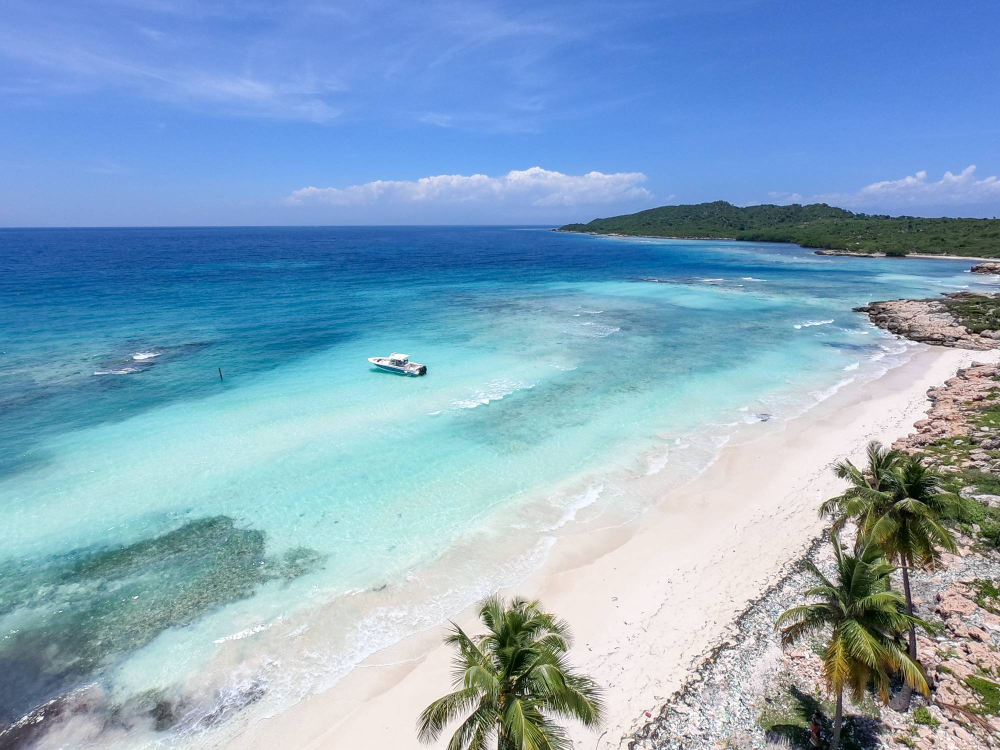

My First Time Going to Haiti!
![]()

Goal:
While travelling to another country is solely based on leisure, the underlying goal of the
mission trip was to provide medicine to families who don't have the means and resources for it.
We also provided school supplies and toys for the children.
Working with Medicine
My cousins and I arrived in Port-au-Prince, Haiti on June 19. After having spent a day there
, we all took a huge ferry to La Gonave, a city in Haiti that is on another island and where my
mom/grandparents grew up. Besides my cousins and aunt from the States who was leading the trip,
our team was also made up of many doctors. Not to mention people who just wanted to come and help. In the mission
trip, you could choose what part you wanted to help with. You could help prepare school supplies for the kids or
separate medicine. I chose to separate medicine, because I like to be very technical with things! It was really
fun working with the doctors and learning more about medicine! We had tons of pain relievers, antibiotics,
vitamins, diabetes medicine and more!
Clinics
In the whole 9-day trip, we had three days where we would carry out clinics in different parts of La Gonave.
While one of the clinics were just a few steps away from the house that we were staying in, the other two clinics
were very high in the mountains. All I have to say about the ride up the mountains was that it took forever and
it was so bumpy!
Leisure
Besides from the hard work, there was a lot of fun things that we did in Haiti. In La Gonave, there was a
beautiful beach that we visited twice and for almost the whole day! My cousins and I went to a huge park in the
heart of La Gonave. Personally, I constantly played with the three dogs that we had in the house in La Gonave!
In Port-au-Prince, we had visited a city called Petion-Ville, which is in the mountains. We went to a restaurant
and got to see the nice view from very high up!
My Takeaway
While I did have a great time in Haiti and I wish to go back next year. I took away a very meaningful message
that I am sure anyone else who would visit would be able to see in a heartbeat. Appreciate the things that you
have now. The first thing I noticed in Haiti was the amount of trash in the streets and how poor a lot of people
were. It is very intimidating, especially when you are from the States, because everyone there thinks that you
are better than them. The thing is, while it may not seem like it, in a way, we have many more priveleges and
things than them that we take for granted. Another thing is, you also have to take showers with a bucket of water.
You have no idea of cold the water was and how long it took. I was so grateful when I came back home to running
water. Appreciate the tiny things, even though it might not seem like much.